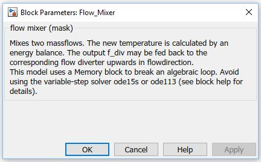

Flow
Mixer
Flow
Mixer Path: CARNOT/Hydraulics
Flow
Mixer
Path: CARNOT/Hydraulics
Purpose
The block calculates the mixture of two incoming flows
and feed back the flow diversion to the Flow_Diverter.
Description
The block uses the
Flow_Mixer_basic block to calculate the
mixture of the fluids and the mass flow diversion.
The result of the flow
diversion rate is delayed by a memory block to break the algebraic loop
of the feed back to the Flow_Diverter.
If you want to use
one of the solvers, replace this block with the Flow_Mixer_Pt1 block in the
example_Hydraulics_FlowMixerPt1.slx
Inputs:
Outputs:
Warning: If you have a hydraulic subcycle that contains sub cycles with flow diverters itself, you have to take care to build up the cycle in such a way, that the branch with more diverting elements is connected to the input THV2 of the mixer. This branch must also be connected to the output THV2 of the corresponding diverter upstream to feed back the right information.
Warning: connect fdiv to the corresponding flow-diverter. Otherwise the massflow- diversion is not correct.
Parameters and Dialog Box

Example: example_Hydraulic_FlowMixer.slx
Characteristics
Direct Feedthrough Yes
Sample
time
Inherited
from driving block
Vectorized
No